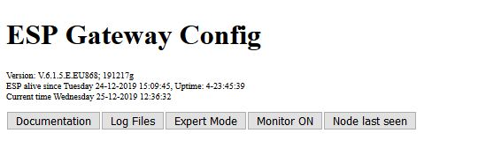
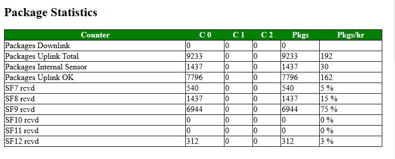
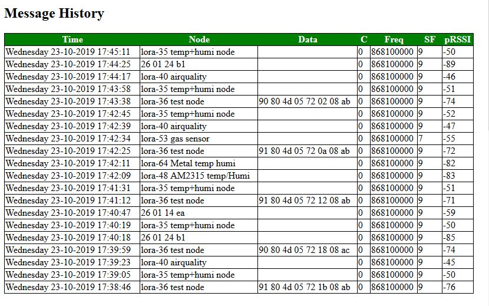
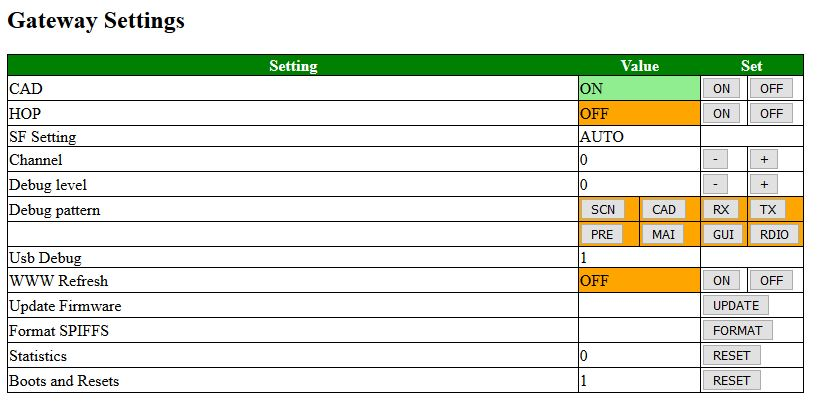
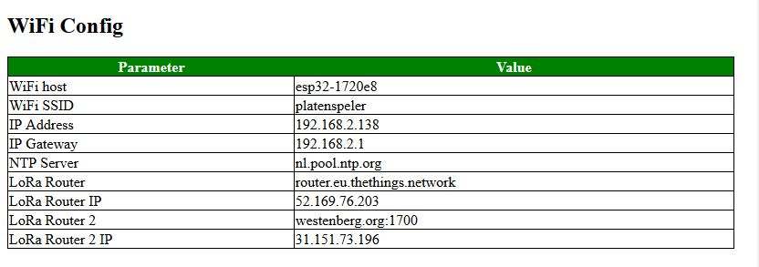
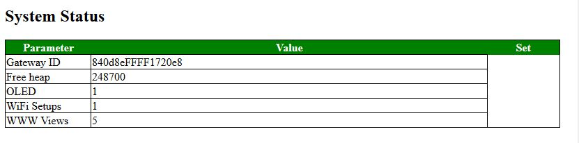
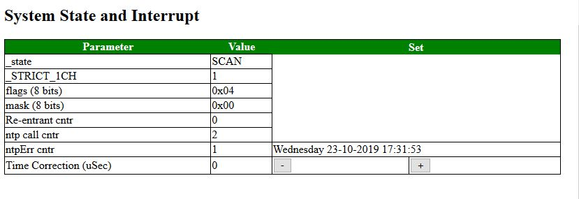

1-Channel Gateway (page 2)
Web Interface Introduction
For this sixth version of the user interface for the single channel gateway we focus on the web interface. This document deals with the web interface only. There are several sections to discuss:
- Description of the user interface
- What are parameters can be set of the web interface
- Files involved in the configuration of the single channel interface.
Sections of the web interface
When starting the web interface the following sections are found:
- ESP Gateway Config
- Package Statistics
- Message History
In the next sections we focus on each of the screen headline separately.
ESP Gateway Config
The first section looks like this:

The ESP Gateway Config part consists of the following components:
- Version Information
- Live Information
- Time Info
- Buttons (3x) to select window behavior:
- Documentation
- Mode (Basic or Expert)
- Log Files
Package Statistics
The package statistics section contains for each configured channel and for each configure Spreading Factor the number of messages received in the past time period. It also contains the number of downlink messages for each Spreading Factor the percentage of that SF in the total of messages received.

Message History
The Message History section contains an overview of the last message received by the gateway. Of every message the following data is stored:
- Date and time of reception
- Node IP, or if configured the Node Name
- If configured the Data of the node
- Channel; The CH tell us at which channel the message was received
- Frequency;
- SF; Spreading Factor
- RSSI; This tell how strong the received signal is. The larger, the stronger the signal.

Gateway Settings
This screen is very important as it lets us configure a lot of the settings.

The settings are the following:
- CAD; This is the setting for Channel Activity Detection. When set, it monitors in the channel all Spreading Factors for incoming messages. The CAD setting should normally be on.
- HOP;
- SF-Setting; When CAD is on, the setting is set on automatic (AUTO). If CAD is off, if allows the user to set the Spreading Factor manually.
- Channel; When HOP is on, it is set to "AUTO". When HOP is off, it allow the user to set the channel. Only three channels can be active.
- Debug level; Depending on the debug level selected certain code checks may or may not be executed and some messages may or may not hit the screen.
- Debug Pattern; The code of the gateway is divided into "Screen", "CAD", "Receive", Transmit", "Pre", "Main", "Gui", "Radio" pieces of code. If the patterns are selected, the corresponding debug code will be executed.
- WWW Refresh; When this function is selected, this screen will be updated automatically every 60 seconds with the latest information..
- Update Firmware; (Not used yet)
- Format SPIFFS; This is a very dangerous setting. If formats the file system of the gateway and destroys its contents. Sometimes it is ne necessary to format as the system will not function normally. Be careful though.
- Statistics;
- Boot and Resets; Number of times that the machine was reset. Use the RESET button to reset the counter back to 0.
Wifi Config (Expert)
The WiFi Config screen is only shown in the "Expert" section. It contains the most important data used to connect the gateway to the internet.

The following data is displayed:
- WiFi Host; This is the name of the Gateway node (in the IDE system for example)
- WiFi SSID; this is the SSID used by the gateway nodes to connect to the system.
Please note that the WiFi Password is set in configNode.h
- IP Address; This is the most important address, and it is used to display this setting.
- IP Gateway; the router/gateway you connect to over WiFi
- NTP Server; This is the server name of the router we use to set the time. As the gateway does not have a battery,
time setting requires and external server. If we cannot connect to the server, it is displayed as an "expert" setting in the System State section.
- LoRa Router; This will in most cases be the TTN environment. If in doubt, DO NOT CHANGE
- LoRa Router IP;
- LoRa Router 2; Its is possible to send the nod data to two separate LoRa MQRR Networks, for example to The Things Network and a private network.
- LoRa Router 2 IP;
System Status (Expert)
This screen is only visible in Expert mode. It does show some system specific settings related to the gateway.

System State and Interrupt
In this section some "hidden" parameters are shown. For the time correction the user can change their settings: However you are advised not to change it.

The meaning of the parameters is as follows:
- _state; This parameter defines the state the engine is in at the moment. Normally the state changes VERY quickly and this parameter does not make sense. However, when the user interface is for reason locked this state can explain why.
- _STRICT_1CH; This parameter defines whether we should not only receive but also send on the same channel as on which we receive a message. If the node(s) are strictly 1CH they will not notice a message coming in on another channel.
- flags
- mask
- Re-entrant cntr
- ntp call cntr; how many call were needed to
- ntpErr cntr; How many error did we receive when trying to synchronize the clock.
- Time Correction; This should normally be 0 micro Seconds.